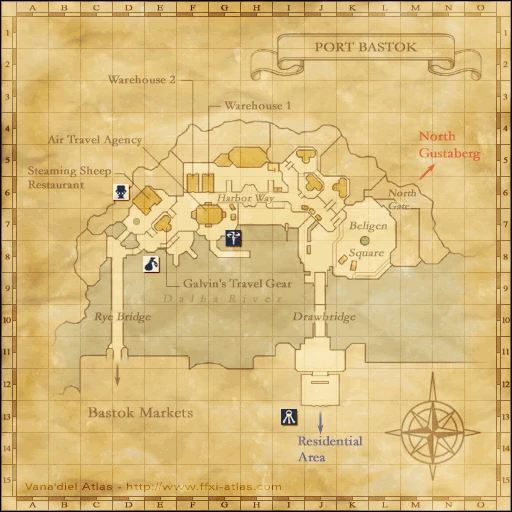

Walkthrough
- Visit Ghebi Damomohe behind the counter in Neptune’s Spire, Lower Jeuno (I-7). Choose one of the following two routes.
- Invitation route: obtain one Tenshodo Invite from a player or an Auction House listing and trade it to her. In Zenith’s reviewed native script, this trade does not require Jeuno Fame 3.
- Application route: with Jeuno Fame 3, choose the blank third dialogue option about membership. Travel to Warehouse #2 in Port Bastok (F-6) and speak to Jabbar or Silver Owl for the Tenshodo Application Form.
- Return to Ghebi Damomohe and speak to her with the form. She exchanges it for the Tenshodo Member’s Card and one Tenshodo Invite. Leave one inventory slot for the invitation.
- With the member’s card, use the door at the end of Neptune’s Spire’s hallway to enter the Tenshodo headquarters. Aldo and Sattal-Mansal are inside.
Reward
Tenshodo Member’s Card + Tenshodo Invite
Continue Magicite
Return to the complete Magicite route
Source
Area maps
Open a zone below, then select a map to enlarge it. Match the named floors and grid coordinates in the steps; these are reference area maps, not a live position tracker.
Lower Jeuno


Port Bastok



Further travel
Additional level-75 reference
|
Walkthrough
- Enter Neptune's Spire in Lower Jeuno. Unbeknownst, presumably, to the local authorities, the Neptune's Spire actually is the headquarters of the secret trading guild the Tenshodo. Speak with the Tarutaru Sutarara, who will talk about the Tenshodo, and about it being "right under your nose". Ghebi Damomohe is at the counter. Speak to Ghebi and select the third, blank line of dialogue. Ghebi will say that you need either a Tenshodo Invite or a Tenshodo Application Form.
Either:
- Head to Port Bastok and into Warehouse #2 across from the Airship Agency.
- Once inside, talk to (Jabbar) to receive the Tenshodo Application Form, then head back to Ghebi Damomohe in Neptune's Spire. Giving Ghebi Damomohe the Tenshodo Application Form grants you a Tenshodo Invite and completes the quest.
Or:
- Buy/trade for a Tenshodo Invite. Return to Ghebi Damomohe in Neptune's Spire. Giving Ghebi Damomohe the Tenshodo Invite grants you a second Tenshodo Invite and completes the quest.
Notes:
- You may need certain fame or reputation to start this quest just by speaking to the NPC behind the counter. If you can't start the quest by talking to the NPC, just buy the invite from the AH and trade it to her. You'll get another invite in exchange.
Game Description
Client: Ghebi Damomohe (Neptune's Spire, Lower Jeuno)
Summary:
- To join the Tenshodo, you need either a membership form or an invitation from a current member.
Adapted from Eden Wiki: Tenshodo Membership · Contributors and history · CC BY-SA 4.0. Revision 10479. Layout, links and optional background text adapted for Zenith.